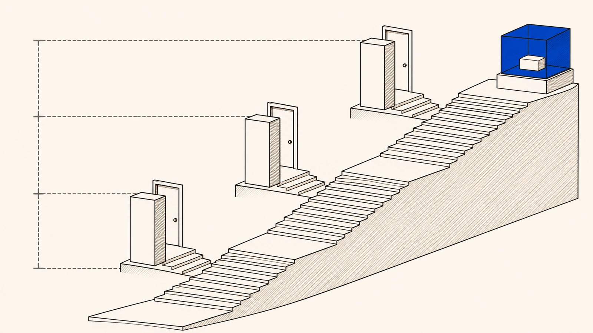

What if the way the service works points toward exploiting the people who use it?Abusive teleology
Sometimes the problem is not an error, a failure or an isolated case. It is the very way the service works.
Staged scarcity, manufactured urgency, the promise of progress, the threat of losing what you have collected and small downgrades in utility seem trivial when you look at them one by one. Together, they squeeze the time you have to think, raise the cost of leaving, make it harder to turn back and leave you more and more tied to the place. Exploitation almost never shows up in an outrageous clause. It shows up as the way the service is programmed to run, and loss becomes routine.
Where it comes from
What occurs, more often, is the combination of staged scarcity, manufactured urgency, promise of progression, diffuse threat of loss, gradual downgrades of utility and symbolic anchoring of permanencep. 670
PT
O que ocorre, com mais frequência, é a combinação entre escassez encenada, urgência fabricada, promessa de progressão, ameaça difusa de perda, rebaixamentos graduais de utilidade e ancoragem simbólica da permanência
In IOC ecosystems, exploitation rarely presents itself in the clean form of a scandalous clause or of an advertisement that lies in isolation. It tends to emerge as an operating programp. 670
PT
Em ecossistemas de OIC, a exploração raramente se apresenta sob a forma limpa de uma cláusula escandalosa ou de uma publicidade isoladamente mentirosa. Ela tende a emergir como programa de funcionamento
It tends to emerge as an operating program, that is, as an articulation of multiple mechanisms that compress reflection time, reorganize expectation, increase exit cost, hinder reversal and make enjoyment progressively dependent on the very environment that governs itp. 670
PT
Ela tende a emergir como programa de funcionamento, isto é, como articulação entre múltiplos mecanismos que comprimem tempo de reflexão, reorganizam expectativa, aumentam custo de saída, dificultam reversão e tornam a fruição progressivamente dependente do próprio ambiente que a governa
Abusive teleology
Teleology means purpose, what a thing points toward. The purpose is abusive when the way the service is provided comes, in practice, to point toward exploiting the fragility of its users. Or toward hiding what is lost, or toward turning each change into a way to lock people in and charge them. The decisive point is that no one has to guess at intentions. Nobody investigates what was going on in anyone's head at the company. What matters is the purpose that shows in the operation itself, through the pattern that repeats, the coherence among the pieces and the effect produced again and again.
Where it comes from
Abusive teleology thus describes a situation in which the practical purpose of the supply arrangement departs from legally tolerable limits and comes to orient the environment toward structural exploitation of vulnerability, toward relevant obscuring of enjoyment or toward recurrent conversion of mutability into a technology of capture.p. 732
PT
A teleologia abusiva descreve, assim, situação em que a finalidade prática do arranjo de fornecimento se afasta dos limites juridicamente toleráveis e passa a orientar o ambiente para exploração estrutural da vulnerabilidade, para obscurecimento relevante da fruição ou para conversão recorrente da mutabilidade em tecnologia de captura.
This is not about investigating the subjective psychological intention of business agents, nor about moralizing every form of monetization, persuasion or private governance. The focus is on the functional purpose objectively inscribed in the arrangement, as revealed by its replicability, its internal coherence and its repeated impact on the consumer's experience.p. 732
PT
Não se trata de investigar intenção psicológica subjetiva de agentes empresariais, nem de moralizar toda forma de monetização, persuasão ou governança privada. O foco está na finalidade funcional objetivamente inscrita no arranjo, tal como se revela por sua replicabilidade, por sua coerência interna e por seu impacto reiterado sobre a experiência do consumidor.
The category does not depend on imputing subjective psychological intention or on locating a single act as a sufficient causep. 448
PT
A categoria não depende de imputar intenção psicológica subjetiva nem de localizar um único ato como causa suficiente

Where it comes from
The second requirement is reproduction as a pattern. The deviation cannot be an isolated episode, a contingent error or an operational exception.p. 448
PT
O segundo requisito é a reprodução como padrão. O desvio não pode ser episódio isolado, erro contingente ou exceção operacional.
What is controlled is not an inner will, but a recognizable programp. 732
PT
O que se controla não é uma vontade íntima, mas um programa reconhecível
Accident or design?
A stumble on a staircase is an accident. A staircase in which one step in every flight is always higher than the others is design. To see this, no one needs to ask what the engineer was thinking. All it takes is to measure the steps and see that the difference repeats, always in the same place.
It is the same with a digital service. A single episode may be just a failure. When the same pieces combine in the same way, cycle after cycle, and always produce the same kind of loss, what appears is a program, and it is the program that can be examined.
Where it comes from
Passage already quoted abovep. 448
The unlawful act therefore does not arise from a singular episode that can be treated as an accident.p. 666
PT
O ilícito não nasce, portanto, de um episódio singular que pode ser tratado como acidente.
Which five questions separate abusive purpose from the rest?
To keep it from becoming a catch-all label, abusive purpose has to pass a five-question test, and every answer must be yes.
Is the purpose written into the design itself, in the terms of use, the access rules and the way of punishing, and not just a side effect? Does it repeat as a pattern, instead of being an isolated episode? Does it take advantage of disadvantages that are part of the arrangement, such as the difficulty of understanding, the dependence of those who have already invested a lot, the cost of switching games and the loss of reputation and history? Does it come with a lack of clarity and little chance to contest the decisions that matter? And does it seriously and lastingly affect what you bought, even without taking everything at once?
Where it comes from
For this qualification to remain controllable and not turn into an elastic label, it must take the form of a test composed of cumulative elementsp. 448
PT
Para que essa qualificação permaneça controlável e não se converta em rótulo elástico, ela deve assumir a forma de um teste composto por elementos cumulativos
The first requirement is inscribed teleology. It must be possible to reconstruct that the exploitative purpose is not merely an occasional side effect, but appears embedded in design choices, terms of use, authorization mechanisms and enforcement strategies that structure the environment of enjoyment.p. 448
PT
O primeiro requisito é a teleologia inscrita. Deve ser possível reconstruir que a finalidade exploratória não está apenas em um efeito colateral eventual, mas aparece incorporada em escolhas de design, termos de uso, mecanismos de autorização e estratégias de enforcement que estruturam o ambiente de fruição.
The exploitative purpose must bear on asymmetries of intelligibility and agency that are part of the very arrangement of governed consumption, such as semiotic vulnerability, dependence through captivity, migration costs and loss of investments accumulated in reputation, networks or history.p. 449
PT
A finalidade exploratória deve incidir sobre assimetrias de inteligibilidade e agência que integram o próprio arranjo do consumo governado, como vulnerabilidade semiótica, dependência por catividade, custos de migração e perda de investimentos acumulados em reputação, redes ou histórico.
The fourth requirement is opacity combined with low contestability. It is not enough that the system is complex or operates with metrics.p. 455
PT
O quarto requisito é a opacidade combinada com baixa contestabilidade. Não basta que o sistema seja complexo ou opere com métricas.
Abusive teleology must produce a substantial and persistent impact on the practical conditions of use and value of the acquired object, even if there is no total interruption.p. 455
PT
A teleologia abusiva deve produzir impacto substancial e persistente nas condições práticas de uso e valor do objeto adquirido, ainda que não haja interrupção total.
A one-off case or part of a pattern?
A skin is sold as exclusive, with the exclusivity built into the price. Months later, it comes back in an alternative shop, in a special currency or for much less, without the duration of the exclusivity having been explained at the time of purchase.
Seen on its own, this may already be misleading advertising by omission. Seen as part of a pattern, in which scarcity is created, sold and then undone cycle after cycle, it may also be a sign of abusive purpose. Artificial scarcity stops being just a commercial strategy when the correspondence between what was promised and what was delivered is hidden or frustrated.
Where it comes from
If, after a period, the same item reappears in an alternative store, in a special currency, in an aggressive promotion or at a significantly lower price, and if the temporal limitation of the exclusivity was not adequately and comprehensibly disclosed at the time of acquisition, there is a retroactive reconfiguration of the value delivered, with frustration of legitimate expectation and violation of transparency.p. 214
PT
Se, passado um período, o mesmo item reaparece em loja alternativa, em moeda especial, em promoção agressiva ou por preço significativamente inferior, e se a limitação temporal da exclusividade não foi informada de modo adequado e compreensível no momento da aquisição, ocorre reconfiguração retroativa do valor entregue, com frustração de expectativa legítima e violação de transparência.
Scarcity, here, may operate as a device for capturing consent under informational inadequacy, with potential classification as misleading advertising by omission and breach of the offerp. 214
PT
A escassez, aqui, pode operar como expediente de captação de consentimento sob inadequação informativa, com potencial enquadramento como publicidade enganosa por omissão e descumprimento da oferta
It is part of a set of design choices oriented toward extraction and not toward the mere efficient organization of a naturally limited resource, and it is at this threshold that it ceases to be merely commercial strategy and becomes a legally relevant category for qualifying the deviation of purpose when the equivalence between promise and delivery is made opaque or deliberately frustratedp. 214
PT
Ela integra um conjunto de escolhas de design orientadas à extração e não à simples organização eficiente de um recurso naturalmente limitado, e é nesse limiar que deixa de ser apenas estratégia comercial para se tornar categoria juridicamente relevante à qualificação do desvio de finalidade quando a equivalência entre promessa e entrega é tornada opaca ou deliberadamente frustrada
element of abusive teleologyp. 745
PT
elemento de teleologia abusiva
Why look at the design, and not at intent?
The focus moves from the businessperson's head to the design. That makes the problem demonstrable, because design can be shown through screens, rules, change history and repeated effects, while intent is something no one can prove from the outside.
And the response can go beyond your own case. When the loss stems from the way the service is programmed, you can ask for the game's paths to be redone, for more transparency and for the design to be corrected, including through collective measures.
Where it comes from
Passage already quoted abovep. 732
The minimum required proof consists of demonstrating the pattern, its replicability, the coordination between mechanisms of the ecosystem and the relevant impact produced on practical autonomy, intelligibility or utility of the experience.p. 746-747
PT
A prova mínima exigível consiste na demonstração do padrão, de sua replicabilidade, da coordenação entre mecanismos do ecossistema e do impacto relevante produzido sobre autonomia prática, inteligibilidade ou utilidade da experiência.
The institutional consequence goes beyond redress of isolated episodes and may include reconfiguration of flows, reinforced duties of transparency, design correction and structural or collective measures.p. 747
PT
A consequência institucional vai além da reparação de episódios isolados e pode incluir reconfiguração de fluxos, deveres reforçados de transparência, correção de desenho e medidas estruturais ou coletivas.
Is charging and persuading already abuse?
Nor is it a label for everything. Charging, persuading and governing a game are not abuses in themselves. A merely aggressive business, a debatable design or an arrangement that is simply efficient for the company are not enough either.
The platform also has legitimate purposes, such as security, stability and game balance. Abusive purpose only appears when it can be shown, with reasons, that the design points mainly toward exploiting the fragility of its users and capturing value disproportionately, and not toward those ends.
Where it comes from
Abusive teleology cannot function as a moral wild card.p. 456
PT
A teleologia abusiva não pode funcionar como coringa moral.
[...] abusive teleology is not to be confused with a merely harsh business choice, with debatable design or with architecture that is simply efficient for the supplier.p. 666
PT
[...] a teleologia abusiva não se confunde com opção empresarial apenas severa, com design discutível ou com arquitetura simplesmente eficiente para o fornecedor.
It must depend on the rational demonstration that the architecture is oriented, predominantly, toward the exploitation of vulnerability and the disproportionate capture of value, with persistent opacity and asymmetry, and not toward legitimate purposes of the service, such as security, stability and the balance of the ecosystem.p. 456
PT
Ela deve depender da demonstração racional de que a arquitetura é orientada, de modo dominante, à exploração da vulnerabilidade e à captura desproporcional de valor, com opacidade e assimetria persistentes, e não a finalidades legítimas do serviço, como segurança, estabilidade e equilíbrio do ecossistema.
What can you demand?
When loss is the rule, the problem is the designWhen loss is the rule, the problem is the design
- When does loss become the routine of the service?
When several small things work together to take advantage of your fragility or to make your experience worse as the routine of the service. They are small frictions that wear you down, losses everyone already finds normal and manufactured urgency. They are also artificial scarcity, a lack of clarity that works in the company's favor and equivalences that shift as convenient.
You do not need to prove that someone wanted to harm you. What matters is the purpose that shows in the very functioning of the environment. It can be seen in the pattern that repeats, the coherence among the pieces and the effect produced again and again.
- What can the design of the service not aim at?
The platform cannot build the experience with an aim of exploitation that goes against good faith, transparency and balance, or that disregards what you legitimately acquired.
- How do you show that the problem forms a pattern?
It helps to show that there is a pattern, that it repeats and how the pieces of the environment fit together. It also helps to show the relevant impact this has on your practical freedom of choice, on your understanding or on the usefulness of what you use.
- Can you ask for more than fixing one case?
You can ask for more than fixing one episode. You can ask for the paths of the service to be rebuilt, for transparency to increase and for the design to be corrected. When that design produces a pattern of harm that repeats, the answer can also reach the structure that reproduces it.
- Is every way of selling and persuading abusive?
Not every way of selling, persuading or running the game is abusive. What is controlled is a program that can be recognized in the functioning of the environment, and not someone's hidden will.
Where it comes from
Whenever microfrictions, normalized losses, manufactured urgencies, artificial scarcities, strategic opacity, elastic equivalences and other mechanisms operate in a coordinated way to extract value from vulnerability or degrade enjoyment as a routine of the environment, there will be a case of abusive teleology.p. 746
PT
Sempre que microfricções, perdas normalizadas, urgências fabricadas, escassezes artificiais, opacidade estratégica, equivalências elásticas e outros mecanismos operarem de modo coordenado para extrair valor da vulnerabilidade ou degradar a fruição como rotina do ambiente, haverá hipótese de teleologia abusiva.
Passage already quoted abovep. 732
The corresponding supply duty is not to structure the experience on the basis of an exploitative purpose incompatible with good faith, transparency, balance and protection of the enjoyment legitimately incorporated into the bond.p. 746
PT
O dever de fornecimento correspondente é o de não estruturar a experiência a partir de finalidade exploratória incompatível com boa-fé, transparência, equilíbrio e tutela da fruição legitimamente incorporada ao vínculo.
Passage already quoted abovep. 746-747
Where on the Path does it matter most?
How do you tell an aggressive business from one whose operation points toward exploitation?
What characterizes abusive teleology?
It is a qualified form of unlawfulness under the CDC regime. The exploitation of vulnerability does not appear as an episodic deviation in the service, but as a purpose built into its operating program. The practical purpose of the arrangement departs from tolerable limits and steers the environment toward the structural exploitation of vulnerability, toward the significant obscuring of enjoyment or toward the recurring use of mutability as a technology of capture.
Where it comes from
Passage already quoted abovep. 732
[...] abusiveness may stem not only from episodic failures, but from the very purpose inscribed in the architecture of the business when conceived to exploit the consumer's semiotic vulnerability.Abstract
PT
[...] a abusividade pode decorrer não apenas de falhas episódicas, mas da própria finalidade inscrita na arquitetura do negócio quando concebida para explorar a vulnerabilidade semiótica do consumidor.
Abusive teleology designates, under the CDC regime, a qualified form of unlawfulness in which the exploitation of vulnerability does not appear as an episodic deviation in the operation of the service, but as a purpose incorporated into its very operating program.p. 665
PT
A teleologia abusiva designa, no regime do CDC, uma forma qualificada de ilicitude em que a exploração da vulnerabilidade não aparece como desvio episódico do funcionamento do serviço, mas como finalidade incorporada ao seu próprio programa de operação.
What does it depend on to be applied?
It depends on two categories that must already be in place. Without the asymmetry it exploits and without the enjoyment bundle it degrades, there is no legally capturable abusive teleology. Only then does the test of five cumulative requirements apply. It reaches exploitative purposes inscribed in the technical and organizational design of the service, and not only in written contractual terms.
Where it comes from
There is no legally capturable abusive teleology without the structural asymmetry it exploits, nor without the enjoyment bundle it degrades, which is why the test of five cumulative requirements, developed in its own subsection, only becomes applicable once semiotic vulnerability and the IOC have already been dogmatically established.p. 394-395
PT
Não há teleologia abusiva juridicamente capturável sem a assimetria estrutural que ela explora, nem sem o feixe de fruição que ela degrada, razão pela qual o teste de cinco requisitos cumulativos, desenvolvido na subseção própria, só se torna aplicável quando a vulnerabilidade semiótica e o OIC já foram dogmaticamente fixados.
Abusive teleology occupies this place as an unlawful act of architecture, that is, as a mode of attribution that reaches exploitative purposes inscribed in the technical-organizational design of the service, and not only in textual contractual commands.p. 394
PT
A teleologia abusiva ocupa esse lugar como ilícito de arquitetura, isto é, como modo de imputação que alcança finalidades exploratórias inscritas no desenho técnico-organizacional do serviço, e não apenas em comandos contratuais textuais.
What is not enough to allege it?
The psychological intent of business agents is not investigated, and the concept does not moralize every form of monetization, persuasion or private governance. A harsh business choice, a debatable design or an architecture that is merely efficient for the supplier does not satisfy the category.
In the situations
Where can you study it in depth?
In the chapter Abusive teleology and the unlawful act of architecture, on the jurist's path.
Concept
Abusive teleology
Function in the regime
It identifies the unlawful actp. 800. It is the criterion of purpose. It depends on semiotic vulnerability and on the IOC. "Its formulation depends on the two preceding categories."p. 394
Where it lives in the thesis
In the three readings
- The consumer's pathdescribes the unlawful act
- The judge's pathcriterion of verification, containment and attribution
- The regime's pathcan identify the unlawful act
Across the platforms
The platform families in which the concept operates.